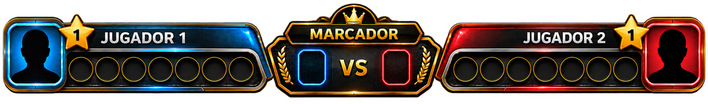
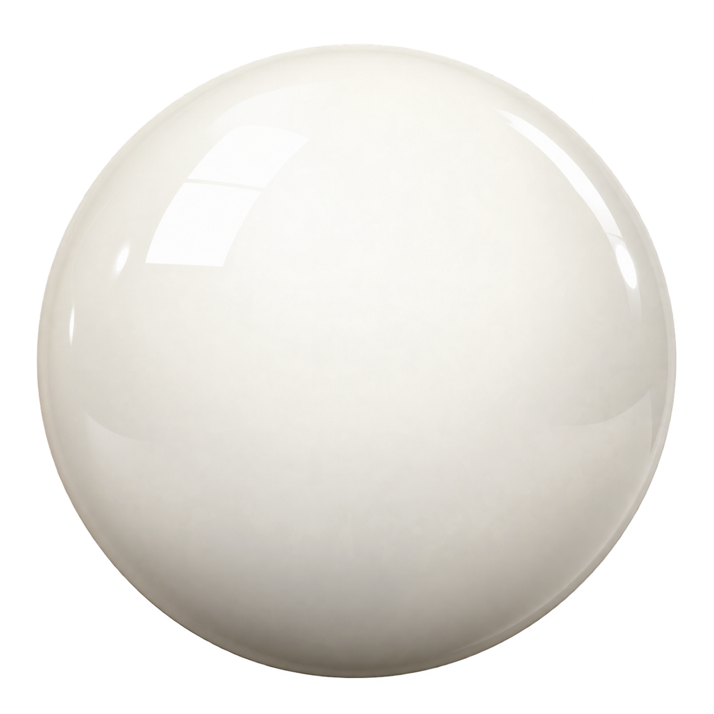
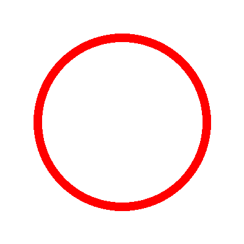
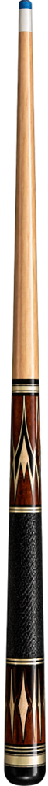
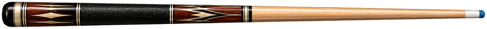
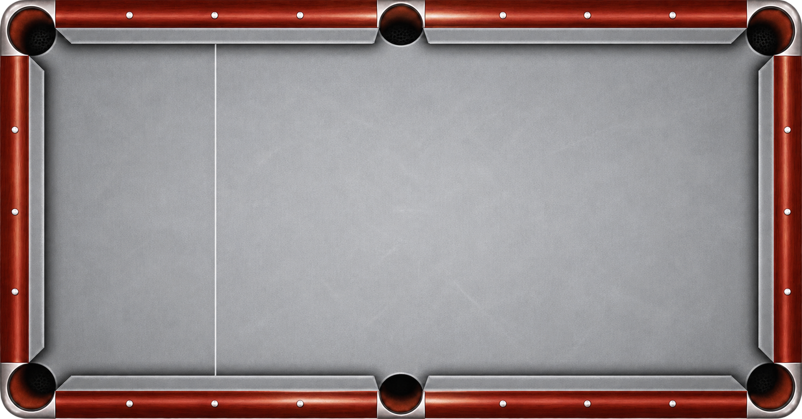
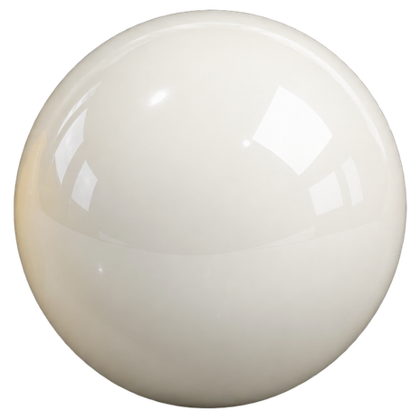
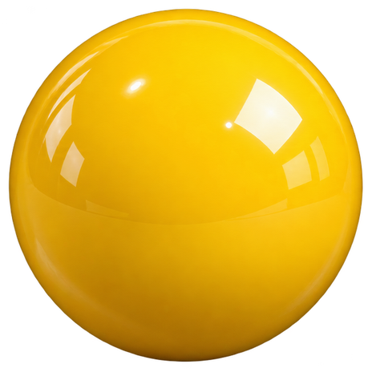
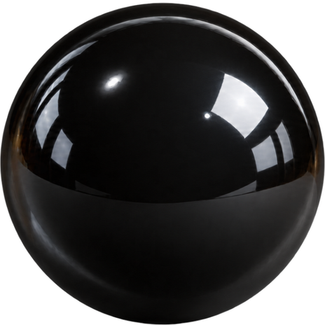
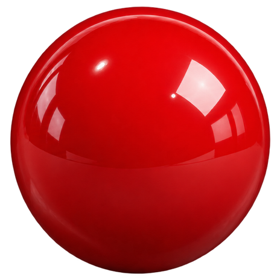

⚪ FÍSICA DE LA BOLA BLANCA
Valores guardados localmente
MESA PROFESIONAL • SALA DE PRÁCTICA
FÍSICA DE BANDAS
Activa el modo y realiza un tiro. Aquí aparecerán los datos del último rebote.



MODO PRUEBA · LÍMITES FÍSICOS VISIBLES




FUERZA
0%
MANTÉN PRESIONADO EL TACO Y BÁJALO PARA CARGAR FUERZA